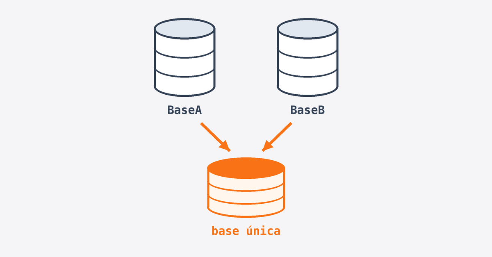

Início · Backup, Recuperação e Migração · Unificar duas bases em produção com chaves iguais
Trilha 03 · caso real
Unificar duas bases em produção com chaves iguais
Duas bases, duas aplicações em produção e o mesmo número de chave apontando para dados diferentes. O cliente pediu uma base só, em 15 dias. Este é o caminho seguido, no formato Problema, Ação e Resultado.
Caso real, com liderança técnica de Daniele de Lima Matos. Os nomes de bases, tabelas e colunas foram trocados por exemplos genéricos: BaseA recebe os dados e BaseB os envia. Os scripts mostram a técnica em T-SQL; adapte nomes e chaves ao seu modelo antes de rodar.

Resumo do caso
- Problema
- O cliente tinha dividido o sistema em duas bases, cada uma com sua aplicação em produção. Com o tempo, as duas passaram a ter dados diferentes com chaves iguais. Num dado momento, o cliente decidiu unir as bases, com prazo de 15 dias.
- Ação
- Proteger as duas bases com backup, definir origem e destino, comparar estrutura, regras, nomes, tipos e permissões, tratar duplicados, gerar novas chaves com tabela de/para, ensaiar em homologação e conferir os números depois da carga.
- Resultado
- As bases foram unificadas dentro dos 15 dias, sem perda de dados, e o cliente passou a operar com uma única aplicação em produção.
O problema: a mesma chave, dois significados
Quando duas bases nascem da mesma estrutura e seguem vivas em paralelo, cada uma gera suas próprias chaves. O ClienteID = 1050 da BaseA é uma pessoa; o ClienteID = 1050 da BaseB é outra. Copiar as linhas de uma para a outra viola a chave primária — ou, pior, junta pedidos de clientes diferentes sob o mesmo número.
Por isso a unificação não é uma cópia. É uma tradução: cada registro da origem ganha uma chave nova no destino, e tudo que apontava para ele precisa apontar para a chave nova.
A ação, passo a passo
1. Backup das duas bases e plano de volta
Antes de qualquer alteração, as duas bases ganham backup completo e verificado. O backup é o plano de volta (rollback): se a carga falhar no meio, o destino volta ao estado anterior.
BACKUP DATABASE BaseA
TO DISK = N'D:\Backup\BaseA_antes_unificacao.bak'
WITH COPY_ONLY, CHECKSUM, INIT;
BACKUP DATABASE BaseB
TO DISK = N'D:\Backup\BaseB_antes_unificacao.bak'
WITH COPY_ONLY, CHECKSUM, INIT;
-- Confirma que o arquivo pode ser restaurado
RESTORE VERIFYONLY
FROM DISK = N'D:\Backup\BaseA_antes_unificacao.bak'
WITH CHECKSUM;COPY_ONLY evita quebrar a sequência de backups da rotina; CHECKSUM detecta página corrompida já na gravação.
2. Escolher a base que exporta e a que importa
Uma base fica como destino e mantém suas chaves; a outra é a origem e tem as chaves renumeradas. Critérios que ajudam a decidir:
- A base com mais dados ou mais integrações externas costuma ficar como destino — menos chaves mudam, menos sistemas são afetados.
- A aplicação que vai continuar em produção define a estrutura que prevalece.
- Relatórios, notas ou documentos impressos com a chave visível pesam a favor de manter aquela base como destino.
3. Identificar chaves primárias e estrangeiras
As chaves primárias dizem o que precisa ser renumerado. As estrangeiras (as chaves secundárias, que apontam para outra tabela) dizem o que precisa ser atualizado junto. A consulta abaixo, rodada em cada base, monta o mapa de quem depende de quem:
USE BaseB;
GO
SELECT
OBJECT_NAME(fk.parent_object_id) AS tabela_filha,
cf.name AS coluna_filha,
OBJECT_NAME(fk.referenced_object_id) AS tabela_pai,
cp.name AS coluna_pai,
fk.name AS nome_fk
FROM sys.foreign_keys AS fk
JOIN sys.foreign_key_columns AS fkc
ON fk.object_id = fkc.constraint_object_id
JOIN sys.columns AS cf
ON cf.object_id = fkc.parent_object_id
AND cf.column_id = fkc.parent_column_id
JOIN sys.columns AS cp
ON cp.object_id = fkc.referenced_object_id
AND cp.column_id = fkc.referenced_column_id
ORDER BY tabela_pai, tabela_filha;A ordem da carga sai daqui: primeiro as tabelas pai (que não dependem de ninguém), depois as filhas. Relações que existem só na aplicação, sem FK declarada no banco, precisam ser levantadas com quem conhece o sistema — a consulta não as enxerga.
4. Verificar se existem regras diferentes entre as bases
Duas bases separadas por muito tempo acumulam ajustes diferentes: uma restrição CHECK a mais, um valor padrão diferente, um gatilho (trigger) que só existe de um lado. Uma linha válida na origem pode ser recusada no destino.
-- Restrições CHECK e DEFAULT, com a definição de cada uma
SELECT 'BaseA' AS base, OBJECT_NAME(parent_object_id) AS tabela,
name, type_desc, definition
FROM BaseA.sys.check_constraints
UNION ALL
SELECT 'BaseA', OBJECT_NAME(parent_object_id), name, type_desc, definition
FROM BaseA.sys.default_constraints
UNION ALL
SELECT 'BaseB', OBJECT_NAME(parent_object_id, DB_ID('BaseB')), name, type_desc, definition
FROM BaseB.sys.check_constraints
UNION ALL
SELECT 'BaseB', OBJECT_NAME(parent_object_id, DB_ID('BaseB')), name, type_desc, definition
FROM BaseB.sys.default_constraints
ORDER BY tabela, name, base;
-- Gatilhos de cada lado
SELECT 'BaseA' AS base, name, is_disabled FROM BaseA.sys.triggers
UNION ALL
SELECT 'BaseB', name, is_disabled FROM BaseB.sys.triggers
ORDER BY name, base;Rode a consulta conectado na BaseA: o OBJECT_NAME sem segundo parâmetro resolve os nomes do banco atual, por isso a BaseB recebe o DB_ID. Regras de negócio que vivem na aplicação — e não no banco — entram na mesma lista, conversando com quem mantém cada sistema.
5. Verificar nomenclaturas, tipos, tamanhos e collation
Tabela com nome igual não garante coluna igual. Uma base pode ter Nome VARCHAR(100) e a outra Nome VARCHAR(60): a carga trunca o texto ou falha. A collation (regra de comparação e ordenação de texto) diferente gera erro em junções e muda o resultado de buscas com acento ou maiúscula.
Um FULL JOIN entre os catálogos mostra, de uma vez, o que existe só de um lado (nomenclatura) e o que existe dos dois lados com definição diferente (tipo, tamanho, collation):
SELECT
COALESCE(a.TABLE_NAME, b.TABLE_NAME) AS tabela,
COALESCE(a.COLUMN_NAME, b.COLUMN_NAME) AS coluna,
a.DATA_TYPE AS tipo_a, a.CHARACTER_MAXIMUM_LENGTH AS tamanho_a, a.COLLATION_NAME AS collation_a,
b.DATA_TYPE AS tipo_b, b.CHARACTER_MAXIMUM_LENGTH AS tamanho_b, b.COLLATION_NAME AS collation_b
FROM BaseA.INFORMATION_SCHEMA.COLUMNS AS a
FULL JOIN BaseB.INFORMATION_SCHEMA.COLUMNS AS b
ON a.TABLE_SCHEMA COLLATE DATABASE_DEFAULT = b.TABLE_SCHEMA COLLATE DATABASE_DEFAULT
AND a.TABLE_NAME COLLATE DATABASE_DEFAULT = b.TABLE_NAME COLLATE DATABASE_DEFAULT
AND a.COLUMN_NAME COLLATE DATABASE_DEFAULT = b.COLUMN_NAME COLLATE DATABASE_DEFAULT
WHERE a.COLUMN_NAME IS NULL
OR b.COLUMN_NAME IS NULL
OR a.DATA_TYPE COLLATE DATABASE_DEFAULT <> b.DATA_TYPE COLLATE DATABASE_DEFAULT
OR ISNULL(a.CHARACTER_MAXIMUM_LENGTH, 0) <> ISNULL(b.CHARACTER_MAXIMUM_LENGTH, 0)
OR ISNULL(a.COLLATION_NAME, '') COLLATE DATABASE_DEFAULT
<> ISNULL(b.COLLATION_NAME, '') COLLATE DATABASE_DEFAULT
ORDER BY tabela, coluna;O COLLATE DATABASE_DEFAULT evita o erro de conflito de collation justamente quando as duas bases têm collations diferentes. Linha com tipo_b vazio é coluna que só existe na BaseA, e vice-versa — às vezes é a mesma coluna com outro nome, e o de/para de nomes vira parte do script de carga.
6. Identificar registros duplicados entre as bases
Chave igual com dado diferente é um problema; dado igual com chave diferente é outro. O mesmo cliente pode ter sido cadastrado nas duas bases. Copiar os dois cria um cliente em dobro. A busca usa um identificador de negócio — documento, e-mail, código externo — e não a chave técnica:
SELECT
a.ClienteID AS id_base_a,
b.ClienteID AS id_base_b,
a.Documento,
a.Nome AS nome_base_a,
b.Nome AS nome_base_b
FROM BaseA.dbo.Cliente AS a
JOIN BaseB.dbo.Cliente AS b
ON a.Documento = b.Documento;Para cada par, alguém do negócio decide qual cadastro prevalece. Na carga, o registro duplicado da origem não é inserido: ele passa a apontar para a chave que já existe no destino.
7. Gerar as novas chaves com uma tabela de/para
A tabela de/para guarda, para cada registro da origem, a chave antiga e a chave nova. Ela resolve três coisas: atualizar as tabelas filhas, rastrear qualquer registro depois da migração e responder a pergunta “onde foi parar o cliente 1050 da BaseB?”.
USE BaseA;
GO
CREATE TABLE dbo.DePara_Cliente (
ClienteID_origem INT NOT NULL PRIMARY KEY,
ClienteID_novo INT NOT NULL,
duplicado BIT NOT NULL
);
-- 1. Duplicados: a origem aponta para o cliente que já existe no destino
INSERT INTO dbo.DePara_Cliente (ClienteID_origem, ClienteID_novo, duplicado)
SELECT b.ClienteID, a.ClienteID, 1
FROM BaseB.dbo.Cliente AS b
JOIN dbo.Cliente AS a
ON a.Documento = b.Documento;
-- 2. Demais clientes: entram com chave nova (IDENTITY) e o par fica registrado
MERGE dbo.Cliente AS destino
USING (
SELECT b.ClienteID, b.Nome, b.Documento
FROM BaseB.dbo.Cliente AS b
WHERE NOT EXISTS (
SELECT 1 FROM dbo.DePara_Cliente AS m
WHERE m.ClienteID_origem = b.ClienteID
)
) AS origem
ON 1 = 0
WHEN NOT MATCHED THEN
INSERT (Nome, Documento)
VALUES (origem.Nome, origem.Documento)
OUTPUT origem.ClienteID, inserted.ClienteID, 0
INTO dbo.DePara_Cliente (ClienteID_origem, ClienteID_novo, duplicado);O MERGE com ON 1 = 0 é um recurso para inserir tudo e, ao mesmo tempo, capturar no OUTPUT a chave da origem junto com a chave gerada — algo que o INSERT ... SELECT com OUTPUT não permite, porque só enxerga as colunas inseridas.
8. Atualizar as chaves estrangeiras das tabelas filhas
Com o de/para pronto, as tabelas filhas da origem entram no destino trocando a chave antiga pela nova no próprio JOIN. Nenhum pedido fica apontando para o cliente errado:
INSERT INTO dbo.Pedido (ClienteID, DataPedido, Valor)
SELECT
m.ClienteID_novo,
p.DataPedido,
p.Valor
FROM BaseB.dbo.Pedido AS p
JOIN dbo.DePara_Cliente AS m
ON m.ClienteID_origem = p.ClienteID;Se a tabela filha também é pai de outra (o pedido tem itens), ela ganha seu próprio de/para pelo mesmo MERGE do passo anterior, e a cadeia segue a ordem levantada no passo 3. Um JOIN que perde linhas aqui indica pedido órfão na origem: vale contar antes, para a diferença não aparecer só na conferência.
9. Verificar permissões de usuários
Quem usava a aplicação da BaseB vai passar a trabalhar na BaseA. Usuários, papéis (roles) e permissões precisam existir no destino com o mesmo alcance — nem menos, para não travar ninguém, nem mais, para não abrir acesso indevido.
USE BaseB;
GO
SELECT
u.name AS usuario,
r.name AS papel,
u.type_desc AS tipo
FROM sys.database_role_members AS rm
JOIN sys.database_principals AS u
ON u.principal_id = rm.member_principal_id
JOIN sys.database_principals AS r
ON r.principal_id = rm.role_principal_id
ORDER BY usuario, papel;A mesma consulta na BaseA mostra o que falta criar. Permissões concedidas direto ao usuário, fora de papéis, aparecem em sys.database_permissions. O login da instância também precisa existir — e, se a BaseA estiver em outro servidor, o SID do login deve bater para o usuário não ficar órfão.
10. Ensaio em homologação
Todo o roteiro roda primeiro numa cópia restaurada dos backups do passo 1, num ambiente de homologação. O ensaio mede quanto tempo a carga leva (o que define a janela de parada em produção), mostra os erros antes que eles aconteçam de verdade e deixa a aplicação ser testada com a base já unificada.
O ensaio pode ser repetido quantas vezes for preciso: restaura, roda, confere, corrige o script. Na produção, roda só a versão que já passou limpa.
11. Conferência depois da carga
Sem perda de dados é uma conta, não uma impressão. Para cada tabela, o total no destino depois da carga precisa ser igual ao total do destino antes, mais os registros da origem, menos os duplicados que não foram inseridos:
-- Clientes: destino antes + origem - duplicados = destino depois
SELECT
(SELECT COUNT(*) FROM BaseB.dbo.Cliente) AS origem,
(SELECT COUNT(*) FROM BaseA.dbo.DePara_Cliente WHERE duplicado = 1) AS duplicados,
(SELECT COUNT(*) FROM BaseA.dbo.DePara_Cliente WHERE duplicado = 0) AS inseridos,
(SELECT COUNT(*) FROM BaseA.dbo.Cliente) AS destino_depois;
-- Totais de valor: a soma dos pedidos não pode mudar
SELECT
(SELECT SUM(Valor) FROM BaseB.dbo.Pedido) AS valor_origem,
(SELECT SUM(p.Valor)
FROM BaseA.dbo.Pedido AS p
JOIN BaseA.dbo.DePara_Cliente AS m
ON m.ClienteID_novo = p.ClienteID) AS valor_migrado;O destino_depois é comparado com a contagem anotada antes da carga; origem precisa ser igual a duplicados + inseridos. Contagem confere quantidade; soma de valor confere conteúdo. Para tabelas sem coluna numérica, um CHECKSUM_AGG(CHECKSUM(...)) sobre as colunas de negócio faz o mesmo papel. A segunda consulta pressupõe que o destino não tinha pedidos dos clientes duplicados antes; se tinha, separe os pedidos recém-inseridos (por data de carga ou por uma coluna de origem) antes de somar.
Resultado
As duas bases foram unificadas dentro dos 15 dias, sem perda de dados, e o cliente passou a operar com uma única aplicação em produção.
O que sustentou o prazo foi a ordem: proteger antes de mexer, comparar antes de copiar, ensaiar antes de produzir e conferir antes de declarar pronto. A tabela de/para continua útil depois da entrega — é ela que responde onde foi parar cada registro antigo.
Checklist para um caso parecido
- Backup verificado das duas bases e plano de volta definido.
- Base de origem e base de destino escolhidas, com o critério registrado.
- Mapa de chaves primárias e estrangeiras, incluindo relações que só existem na aplicação.
- Comparação de regras:
CHECK,DEFAULT, gatilhos e regras de negócio. - Comparação de nomes, tipos, tamanhos e collation.
- Duplicados identificados por chave de negócio e decisão de qual prevalece.
- Tabela de/para para cada tabela renumerada.
- Tabelas filhas carregadas com a chave nova.
- Usuários, papéis e permissões recriados no destino.
- Ensaio completo em homologação, com tempo de carga medido.
- Conferência de contagens e totais antes de liberar a aplicação.